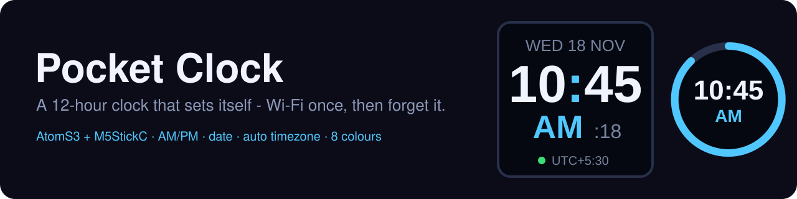

Install in your browser
Flash Pocket Clock onto an M5Stack AtomS3 (the one with the display) straight from Chrome or Edge on a computer - no tools to install.
- Connect the AtomS3 with a USB-C data cable.
- Press Install and choose the serial port ("USB JTAG/serial" or "USB Serial").
- If no port shows: hold the AtomS3 button, plug in USB, release, and try again.
- When it finishes, join the Wi-Fi ClockSetup on your phone and enter your home Wi-Fi.
Controls: click = next face, hold 0.6 s = colour, hold 3 s = Wi-Fi setup.
Other ways to install (esptool, PlatformIO, M5Burner): see the flashing guide.